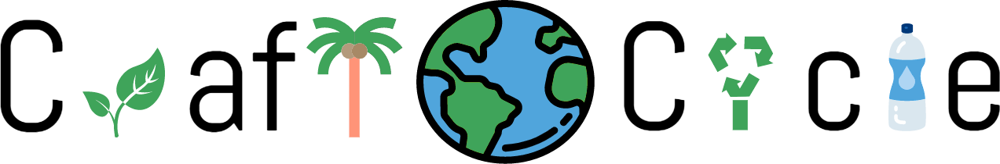
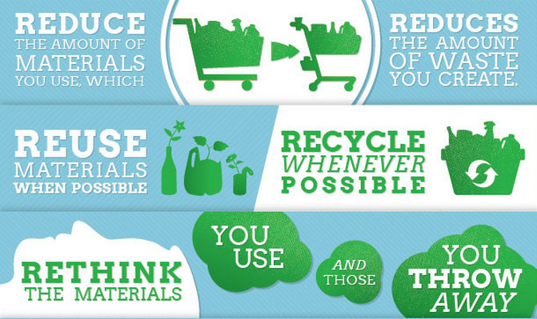
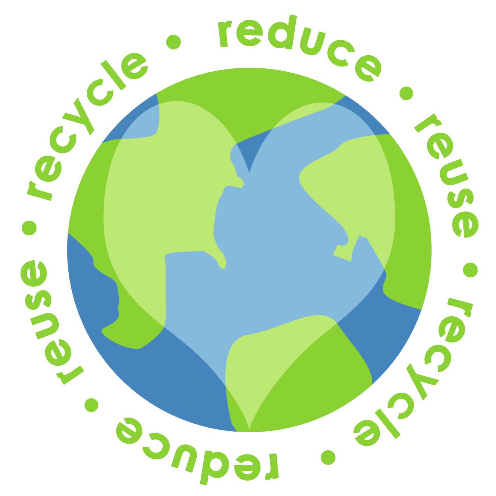
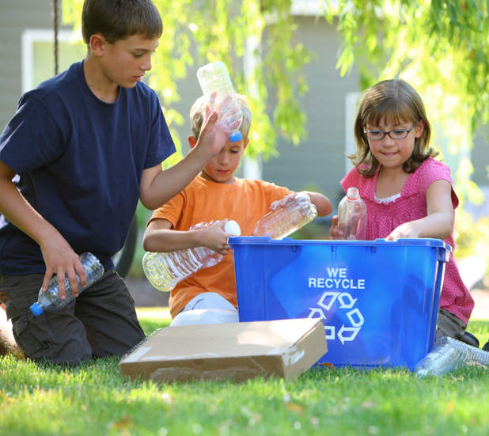
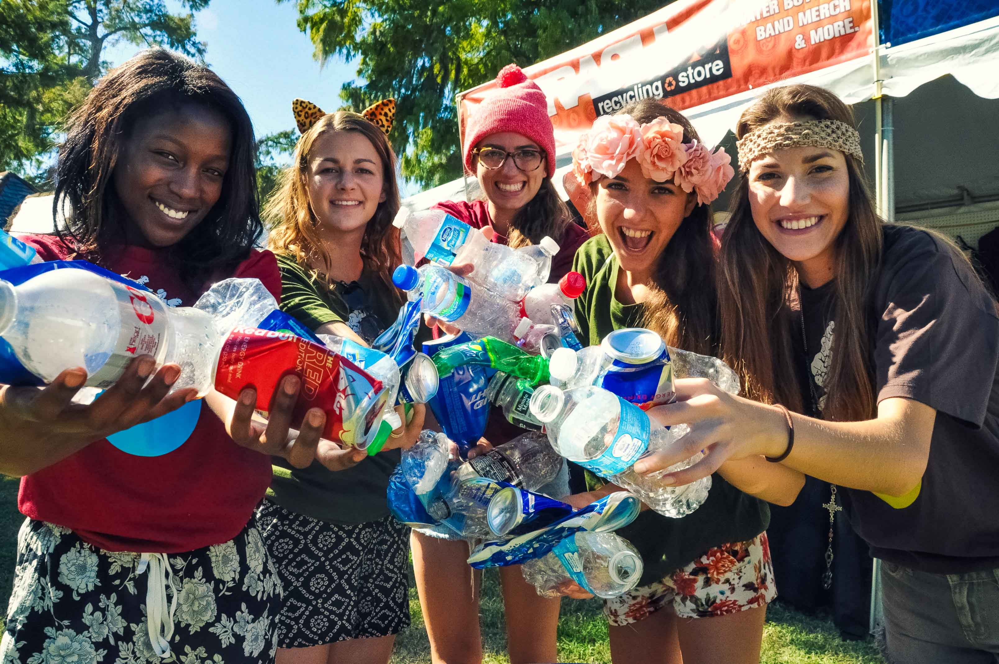
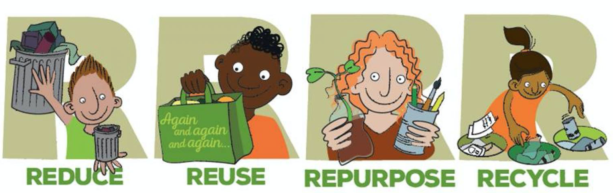
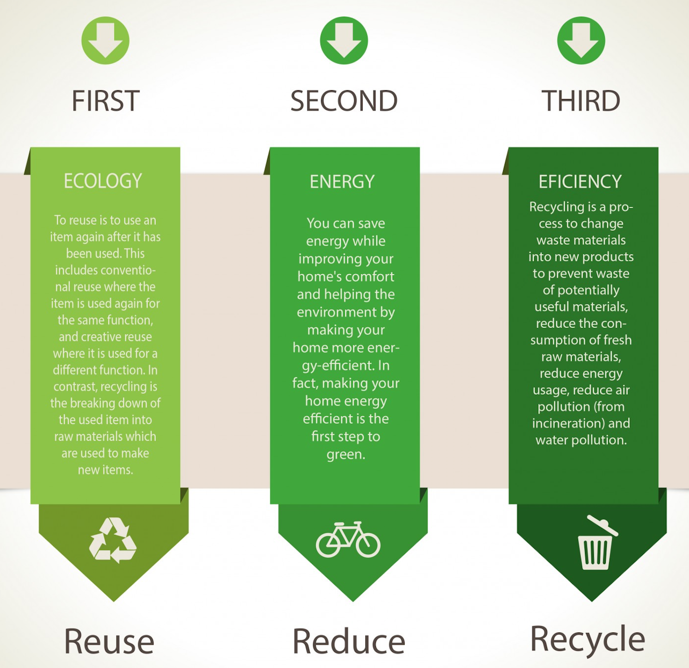

Saving the planet one craft at a time.

Over the past 100 years, the amount of waste that humans
produced has increased by over
10,000%

The EPA estimates that 75%
of the American waste stream is
recyclable, but we only recycle about 30%
of it. We generate
21.5 million tons
of food waste each year.



